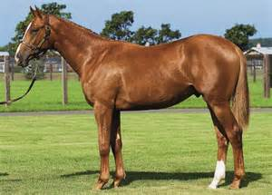

|
|
|
第八章 アンチコニーエ
ガヴァーンはアスカルーンの都シャンプファンツーンに足を踏み入れた。シャンプファンツーンは、キングリムルゼルとの一騎討ちの場所であり、ガヴァーンにとっては、危険を予感させる場所だ。遠くにそびえる城を見て、ガヴァーンの気持ちはひきしまった。
城の前方には広大な野原が広がり、数百人もの騎士が鷹狩りをしていた。アスカルーンの王フェルグラートも名馬に乗って、鷹狩りを楽しんでいた。集団に近づいてくる騎士を見つけたフェルグラートは、自ら、進んで出迎えた。ガヴァーンがシャンプファンツーンに向かっていることは、キングリムルゼルから聞いて知っていたので、疑いなく出迎えたのである。フェルグラートはガヴァーンに言った。
「殿、ようこそ、シャンプファンツーンへ。本来ならご一緒して、城までご案内さしあげたいところですが、ご好意に甘えさせていただければ、先に行ってお待ちいただきたいのですが、失礼にはなりませんか。」
ガヴァーンは答えた。
「あなたが何をされようと不都合はありません。」
フェルグラートは続けて言った。
「あそこに見えている城には、私の妹のアンチコニーエがいます。妹は大柄ではありますが、あらゆる美しさをかねそなえた女性です。妹がきっとおもてなしをすることでしょう。どうぞ、楽しんでください。退屈することはないと思います。」
「それは嬉しいことでございます。そこで、あなたにも再びお会いできることを楽しみにしています。」
フェルグラートは騎士を一人付き添わせて、ガヴァーンを十分にもてなすように、妹に伝えさせた。
ガヴァーンは城に着くと、アンチコニーエに会うために、甲冑をぬぎ、剣をはずした。女性の前に出るためには必要な礼儀だ。ガヴァーンはアンチコニーエのいる部屋へ案内された。連れの騎士はアンチコニーエに、王の伝言を告げた。アンチコニーエは、目鼻立ちが整っていて、この上ないほど美しい女性だった。生命力あふれる唇からは、言い知れぬ魅力がただよっていた。アンチコニーエは背の高い大柄な女性だが、均整のとれた肢体は、絹のドレスに包まれて、まるで美の女神ヴィーナスのようだった。
アンチコニーエは言った。
「殿，私のそばにいらっしゃいませ。兄から、十分におもてなしをするように言われています。あなたのお好きなようにいたしますので、何なりと、おっしゃってください。」
ガヴァーンはアンチコニーエを見て、その成熟した美しさに胸がときめいた。これほど見事に美しく、すべてが整った女性には会ったことがなかった。ガヴァーンは言った。
「アンチコニーエ様、あなたを見ていると、私の胸が高鳴ります。あなたへのごあいさつに、キスをさせていただきとうございます。」
ガヴァーンはアンチコニーエの厚い唇に、熱烈なキスをした。初めて会う人への挨拶のキスとは思えなかった。熱いキスが長時間続いた。
それから二人は腰をおろすと、ガヴァーンはアンチコニーエを求める気持ちを切々と語りはじめた。甘い言葉がいくつも交わされた末にアンチコニーエは、こう言った。
「殿へのおもてなしは、これで十分かとお考えいただけますか。私は兄から言われたので、失礼のないように、お相手をつとめましたが、もう十分に役目をはたしたと思います。これ以上、愛を求めるのは、早すぎます。」
そばに侍していた乙女たちは、二人に酒を注ぐと、気をきかしてすぐに引きさがっていった。こうして二人のほかには、部屋に誰もいなくなると、ガヴァーンはアンチコニーエの腰に手をまわした。するとガヴァーンの心の苦しみは一層強まり、二人の男女は愛のとりこになっていった。二人はもうすっかりその気になっていたのだ。
ところが、その時，一人の老人の騎士が扉をあけて、部屋に入ってきた。老騎士はガヴァーンがいると見るや、大声をあげた。
「皆の者、武器をとれ。ガヴァーンがいたぞ。」
老騎士は続けてさけんだ。
「おいっ、ガヴァーン。お前は我々の主君キングリジーンを殺しておきながら、それでもなお飽きたらず、姫君をはずかしめ、けがそうとするのか。場所をわきまえろ。何様だと思っているのだ。ここでお前を打ち殺してやる。」
老騎士の叫びに呼応した人々が、大勢集まってきた。まるでガヴァーンを血祭りに上げようとするような勢いだった。ガヴァーンは絶対の危機におちいった。袋だたきにされて、八つ裂きにされるのではないかと思えるほどの恐怖を感じた。
「アンチコニーエ様、身を守るものがありません。私の剣さえあれば…。」
アンチコニーエは言った。
「防戦できる場所に行きましょう。居間のそばの塔へ逃げれば、なんとか切りぬけられるかもしれません。」
アンチコニーエはガヴァーンとともに、裏口から出て塔へ向かった。人々は次々に二人を追いかけてきた。二人が塔にたどり着いたとき、人々は後方に迫ってきていた。
ガヴァーンは、入り口の扉を閉じていた長さ三メートルほどの角材でできたかんぬきをはずし、それを武器にして防戦した。剣をもって襲いかかってくる輩を、かんぬきで突きたおした。長さ三メートルの重いかんぬきで突かれた者は、ひとたまりもなく、たおれて気絶した。
アンチコニーエは、ガヴァーンがかんぬきで防戦している間、塔の中に入って武器をさがした。すぐに、塔の中から大きなチェス盤を持ってきてガヴァーンにわたした。ガヴァーンはこれを楯の代わりにした。アンチコニーエは、大きく重いチェスの駒を、襲いかかってくる人々に投げつけた。キングやルークやビショップなどの駒を、手当たり次第に投げつけた。ぶつけられた者は、次々に倒れた。
ガヴァーンは駒を投げているアンチコニーエを時々チラリと見た。豊かな胸と尻の間の細くくびれた腰にベルトをしている様は、実に魅力的で、ガヴァーンの目の肥やしになった。美しいアンチコニーエの体は、ガヴァーンを勇気づけた。
二人はかんぬきとチェスの駒で、何人もの人を倒し、戦いつづけていた。そこへ、アスカルーンの王フェルグラートが、自ら武装して戦いの場に現れた。そして、ガヴァーンを相手に戦っている戦闘部隊に、なおも激しく攻撃するようにけしかけた。フェルグラートは、ガヴァーンの旅の途中の安全を、キングリムルゼルが保障していることを、知っていた。それにもかかわらず、憎しみのあまりガヴァーンの命をねらい、父の復讐をとげようとしていた。
ガヴァーンはフェルグラートの武装した姿を見て、部隊の勢いが増したのを感じ、アンチコニーエとともに、塔の中へ逃げこんだ。ガヴァーンは階上の踊り場から、外の様子を見た。
すると、そのときキングリムルゼル方伯が現れた。キングリムルゼルは、攻撃を受けて窮地に陥っているガヴァーンを見て、攻撃している部隊とフェルグラート王に対して、怒りを爆発させた。己の魂の誠実をかけて、ガヴァーンの命を保障した約束が、いとも簡単に反故にされたからである。自身との一騎討ちまでは、ガヴァーンの体は安全に保障されなければならなかった。その約束が、見るも無惨に破られ、面目を失ったのだ。
キングリムルゼルはガヴァーンに声をかけた。
「ガヴァーン殿、どうか戦いの手をしばらく休めて、私をそちらに行かせてほしい。この戦いは私の望むものではない。私にはガヴァーン殿の命を保障する使命がある。ガヴァーン殿の側に付いて、この王との戦いに参加させてほしい。」
これを聞いて、ガヴァーンはキングリムルゼルを呼び入れた。キングリムルゼルは階段を駆け上がっていき、ガヴァーンと手を組んで、王とその部隊に対して、戦いを始めた。
これを見て、フェルグラートは叫んだ。
「私のいとこが、私をひどい目に合わせた男の味方になるとは、一体どういうことだ。」
フェルグラートの部下の一人が忠告した。
「殿、はっきり申し上げますが、もし殿が客人を殺せば，殿は名声を失います。殿は不名誉な人間になりさがります。その上、キングリムルゼル方伯は、殿のいとこです。そのいとこが、旅の安全を保障している客人に対して、殿は戦いを仕かけられています。どうか、戦いを中止してください。殿が非難を受けることは、目に見えてあきらかです。」
これを聞いて、フェルグラートは休戦することを決めた。父の復讐は、いつでもできると思った。
だが、実際のところは、ガヴァーンはこの件に関して、まったくの無実だった。フェルグラートの父キングリジーンは、他の騎士の手にかかって亡くなったのだ。しかし、過去の真実に目を向けようとする者は、誰もいなかった。王が妄信する遺恨をはらすこと、それだけが重要なのだった。
休戦が告げられると、人々は戦いの場から離れていった。
アンチコニーエは、キングリムルゼルに何度もキスをして、その正義感ある行動に感謝した。
「私たちを救ってくださいまして、ありがとうございます。あなたは正しいことをされました。あなたは、すばらしいいとこです。」
続いてアンチコニーエは、兄フェルグラートのところに行き、非難をあびせた。
「兄上様、あなたはひどいことをされました。私は高潔な振る舞いという楯を持って、あなたからの攻撃を必死にしのぎました。男が助けを求めて女性のもとへ逃げたら、たしなみのある騎士だったら、その女性に免じて、追撃をやめるものです。あなたは私のもとに逃げてきたお客様を襲ったのです。兄上の名誉はけがれることでしょう。」
続いて、キングリムルゼルも口を開いた。
「フェルグラート殿、私がガヴァーン殿に、この城に至るまでの旅の安全を保障しましたのは、あなたを信頼した上でのことです。ここで、一騎討ちの試合が行われる予定でしたが、それは行われず、その代わりに、武器を持たない者を一方的に攻撃するような卑劣な戦いが行われました。こんなことになってしまっては、もう予定通り一騎討ちを行うことはできません。これで私の面目はつぶれました。私は誠実を貫き、人の信頼を大切にしている騎士です。今受けている名誉をけがすことなく、一生を終わりたいのです。このような卑劣な行為はなされるべきではありません。一切の名誉が失われてしまいます。」
二人の言葉を聞いたフェルグラートは、恥を感じて意気消沈した。
すると、そのとき、フェルグラート王の家臣の一人、リダムスが姿を現した。口達者と臆病者で知られていたリダムスは、さっそく口を開いた。
「私の主君フェルグラート王の父君キングリジーンを殺害しておいて、いったいなぜ、この城へやってきたのだ。自ら罪を償うつもりなのか。だったらここで処刑の準備をはじめたい。王の手で、父君のかたきを討っていただきたい。死は死によってあがなうべきです。」
すると、キングリムルゼルがリダムスに言いかえした。
「リダムス殿、から元気のけんかを売るのは、やめたほうがいいだろう。あなたは昔から戦いが嫌いで、臆病者だったではないか。戦いになるといつも真っ先に逃げていたではないか。集団の背後に隠れて、じっとしていたではないか。王があなたの忠告に従うようでは、この国の王冠もあぶないものだ。」
「私が戦うか逃げるか、勇士なのか臆病者なのか、そんなことをぐだぐだと言いたければ、何とでも勝手に言ってください。私は騎士の栄誉こそありませんが、十分な収入もあり、今の生活に満足しています。」
「収入があれば、臆病者でいられるのか。」
「私のことはかまわないでください。キングリムルゼル殿。そんなに自慢げに、騎士の名誉と勇敢さを誇りにしたければ、今ここで、あなたの伯父上の復習をされたらいかがですか。わざわざベルターネから、一騎討ちの相手が来ているではありませんか。さっさと片づけておしまいください。」
キングリムルゼルは、リダムスの挑発的な態度にも、冷静さを保とうとした。
「私はガヴァーン殿と一騎討ちの試合をする予定だったのです。ところが予期せぬ王の邪魔がはいり、それで今、私は王に憤慨しているところなのです。王がこんな卑劣なことをするとは思わなかった。」
リダムスは責任を逃れるような態度をして言った。
「私は知りませんよ。私はこの件には何のかかわりもありませんし、他人のために危険な目に合いたくありません。むしろ戦う騎士の裏方で、料理番でもしているほうが、よほど性に合っています。」
キングリムルゼルは言葉を返した。
「あなたらしいお言葉だ。私に対して、かたき討ちをしろ、とけしかけておきながら、自分は料理番をしていようというのか。情けないやつだ。臆病者め。私はガヴァーン殿という強敵を相手に、生きるか死ぬかの戦いに挑んでいるのだ。」
「臆病者でけっこうです。あなたこそ、ガヴァーンという強敵を相手にして、怖がっているのではないのですか。私は戦いは、いやです。どんなにお金をたくさん積まれても、戦いはおことわりさせていただきます。戦わなくても、立派に王のために役立つ仕事をさせていただいています。それで十分です。
あなたは、せいぜい、私のように臆病者と言われないように、勇敢なところを見せて、騎士の名誉をお守りください。」
「自分のことは棚に上げて、何を、そこまで侮辱するのか。」
らちのあかない会話に嫌気がさして、フェルグラートは二人の仲裁に入った。
「いいかげんに口論はやめないか。勝手な言い合いをされては不愉快だ。」
キングリムルゼルは気を取りなおして、言った。
「さて、ガヴァーン殿、王の卑劣な行為で、邪魔をされてしまったが、どうか仕切りなおして、私に誓っていただけないだろうか。もし今日ここで、そなたの命がなくならなければ、一年後の今日の日に、再び一騎討ちの試合をして決着をつける、と約束してはいただけないか。今度は、リース国のメルヤンツ王の前で行いたい。」
ガヴァーンはこの申し出に応じた。
「来年の今日の日に、メルヤンツ王の前で、一騎討ちを行うと約束しよう。」
フェルグラートは、集まっている人々に声をかけた。
「さて、これからどう決着をつけたらいいのか、会議を開いて話し合いたいと思う。私の味方になってくださる方は、どうかこちらに集まって意見を述べていただきたい。」
フェルグラートはそう言って、会議の席へ向かった。
アンチコニーエはガヴァーンとキングリムルゼルを、自分の部屋に招きいれた。
「ガヴァーン様。あなたが、こうしてご無事でいられてよかったです。そうでなかったら、国中大変なことになっていましたわ。」
アンチコニーエは運ばれてきた料理を二人に取り分けた。二人はアンチコニーエに進められるがままに、心ゆくまでごちそうになった。
フェルグラート王が催した会議では、次々に意見が交わされ、あらゆる角度から問題が検討された。会議の最後に王は言った。
「一週間前のことだが、私は森の中で一騎討ちをやるはめになった。その戦いでは、相手の騎士が栄誉を獲得した。私はあっという間に、馬から突き落とされてしまった。その騎士は、私の命を奪う勢いだったが、忠誠の誓いを迫るかわりに、聖杯を手に入れるように誓わせたのだ。それは無理難題とわかってはいたが、私は命が惜しかったので、聖杯を手に入れると誓ったのだ。
私は今、死ぬか、聖杯を手に入れるか、その瀬戸際にいるのだ。
その騎士は、さらに条件を付け加えて、もし一年間の間に、聖杯を手に入れることができなければ、逃げ隠れすることなく、ペルラペイレの女王のもとに行き、忠誠の誓いをするように命じた。名は名のらずに、『クラーミデーから救い出したあの騎士だ』と言っていた。」
リダムスが、またも口をはさんだ。
「フェルグラート王、その森で騎士に誓わされたことを、ここにいるガヴァーンにやらせましょう。ガヴァーンに聖杯を手に入れるよう約束させるのです。ここでは何事もなく平穏に、この城を出発させ、聖杯獲得の戦いに向かわせるのです。
もし彼がこの城で打ち殺されることになれば、我々は非礼を責められ、名誉は失われます。ですから、あの騎士の不届きは許してやるのがいいでしょう。王は妹君と和解されるのがよろしいです。彼はここから無事に逃れても、どのみち、ムンサルヴェーシュという死地におもむくことになるのです。ムンサルヴェーシュは、不思議なところにあり、非常に堅固な城で、誰一人として入れる者は、いないのですから。」
この提案に居合わせた人々は賛成した。こうしてガヴァーンはこの地で、死なずにすんだのである。
ガヴァーンはその夜は手厚くもてなされ、ゆっくりと休むことができた。
翌朝、ガヴァーンはフェルグラート王の前に呼び出された。アンチコニーエに案内され、キングリムルゼルとともに、王の前に通された。
アンチコニーエは言った。
「兄上、ガヴァーン様をお連れいたしました。どうか私に免じて許してあげてください。
兄上には、世間の敵意を招くよりも、誠実であることのほうがお似合いです。そして、私が兄上のことを許せるように、お取りはからいください。」
フェルグラートは言った。
「アンチコニーエよ。そうすることにしよう。私はお前から嫌われていると思うと、耐えられないのだ。どうか私を嫌わないでくれ。その代わりにお前の言う通りにしよう。
そこで、ガヴァーン殿、ひとつお願いがある。
私は妹と和解したいのだ。妹の申し出にしたがって、そなたを許してさしあげたい。父キングリジーンのことは水に流そう。そのかわりに、お願いを聞いていただきたい。
聖杯を探しだして、手に入れていただきたいのだ。聖杯はムンサルヴェーシュにあると聞いている。できれば、一年以内に探しだして、ここに届けてほしい。これはそなたにとっても名誉なことだと思う。」
ガヴァーンは答えた。
「かしこまりました。聖杯を探しだすことを約束いたしましょう。一年以内に、ここに届けられるようにいたします。」
こうして和解が成立した。フェルグラート王はガヴァーンを許し、キングリムルゼルもガヴァーンとフェルグラート王を許した。これですべてが平らになったのだ。
残る問題は、ガヴァーンの聖杯探しだけとなったが、これにより、心を一つにした両雄、パルシファルとガヴァーンが、ともに聖杯を追いかけることになった。立場と目的こそ違うが、二人が聖杯という一つの目的に向かうことになり、ガヴァーンはパルシファルの動向が気になった。
そこへガヴァーンの小姓二十人が連れてこられた。ガヴァーンは安堵の表情で声をかけた。
「いったいどこへ行っていたんだ。心配していたぞ。」
若い小姓は答えた。
「ガヴァーン殿の愛鳥、ハイタカを追いかけていたのです。」
ガヴァーンが言った。
「そうだったのか。無事でよかった。私のほうも、ここで一騒動あったのだ。もし、私が打ち殺されていたら、大変なことだった。君たちは泣いているだろう。ここから先の旅は、私一人で行こうと思う。君たちは国に帰るのだ。キングリムルゼル殿に君たちの道案内をしていただくつもりだ。」
ガヴァーンは若者に別れを告げると、今度はアンチコニーエに向かって言った。
「アンチコニーエ様。お別れの時がまいりました。お別れの挨拶をしなければなりません。私は命のある限り、騎士としての真心をあなたに捧げます。王女様、あなたは、その誠実な振る舞いにより、すばらしい賞賛を受けています。どうか幸せでいられますように。いつまでも、世の尊敬を集めていられますように。」
アンチコニーエは別れの悲しみから、涙を流した。
「私がもう少しお役に立てていたら、こんな悲しい別れをせずにすんだかもしれません。あなたは聖杯探しに旅立ってしまいますが…、ガヴァーン様…、私はいつもあなたとともにいます。あなたとともに戦います。」
アンチコニーエはガヴァーンの唇にキスをした。
ガヴァーンの胸中も悲しみであふれた。ガヴァーンは胸にあふれる苦しい感情を振りほどき、出発の準備をはじめた。
ガヴァーンは最後の別れの挨拶をし、聖杯を探す苦難の旅へ、馬を走らせていった。

|
|
|